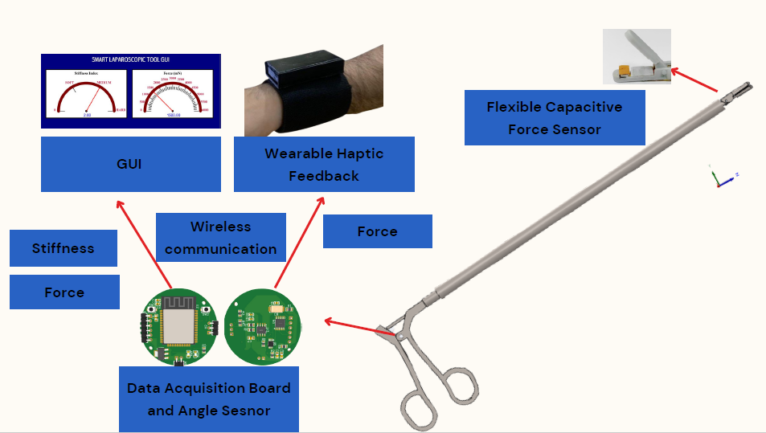
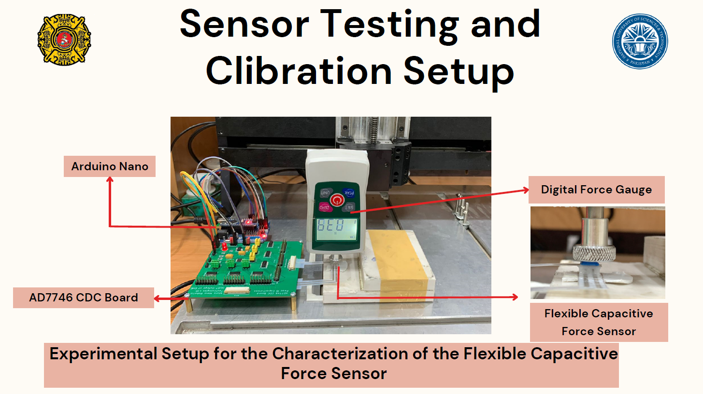
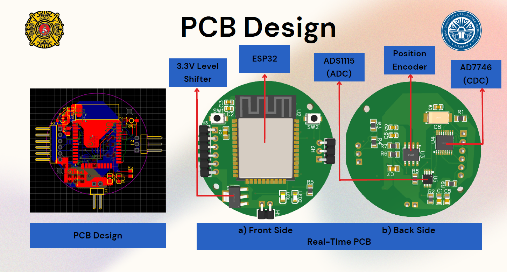
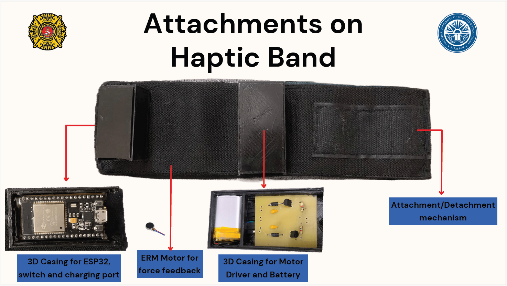
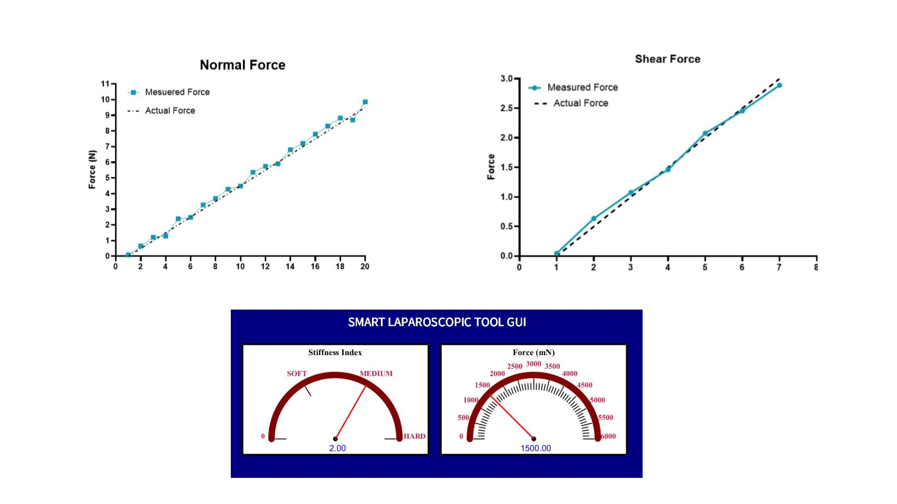

Force Sensing Surgical Instrument for Robotic Surgery
Designed a smart laparoscopic tool with real-time force sensing, stiffness estimation, and wireless haptic feedback.
Developed an integrated sensing system for minimally invasive surgery using a flexible capacitive force sensor, compact DAQ electronics, angle sensing, GUI visualization, and wearable haptic feedback. The project combined sensor design, PCB development, calibration, mechanical integration, embedded programming, and wireless data flow.
✔️ Measured normal and shear force with less than 8% error
✔️ Built complete DAQ pipeline using ESP32, AD7746, ADS1115, and AS5600
✔️ Delivered wireless sensing + haptic feedback prototype selected for innovation competitions

Calibration Setup
Custom PCB / DAQ Board
Wearable Haptic Band
Force Sensing Results